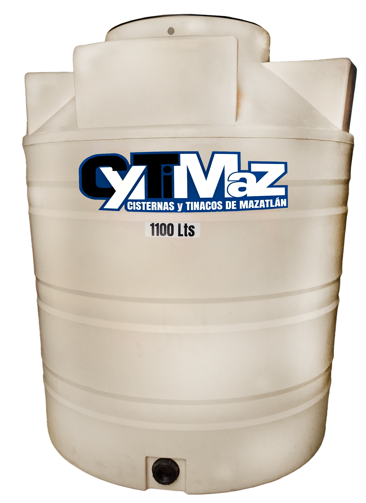

Agua limpia y segura con la máxima resistencia de fábrica
Fabricamos tinacos bicapa, tricapa con filtro UV y cisternas de alta resistencia en polietileno 100% virgen. Creados especialmente para soportar el calor y sol de Mazatlán sin deformarse ni generar lama verde.

Tinaco Tricapa 1,100 Litros
Triple protección UV anti-algas + Aislante espumado antibacterial
🔍 Calcular tamaño para mi casaCatálogo de Tinacos y Cisternas Cytimaz
Selecciona la categoría de tu interés para consultar especificaciones, capacidades, dimensiones y solicitar cotización inmediata a precio directo de fábrica.
¿Por qué elegir Rotomoldeo Cytimaz?
El proceso de rotomoldeo por carga múltiple crea tanques de una sola pieza uniforme, sin pegaduras ni uniones débiles que puedan agrietarse con el tiempo.
Radiografía de Nuestro Tinaco Tricapa
Tres capas sincronizadas para el clima extremo de Mazatlán:
Capa Exterior Arena (Filtro UV Grado 8)
Protege la estructura contra los rayos ultravioleta y minimiza la absorción térmica del sol.
Capa Intermedia Negra (Barrera Fotosintética)
Bloquea totalmente el paso de la luz solar, impidiendo el crecimiento de moho, algas y lama verde.
Capa Interior Blanca Espumada (Aislante Antibacterial)
Conserva el agua más fresca, ofrece rigidez y permite visualizar con total nitidez la pureza del agua.
100% Grado Alimenticio
Fabricados exclusivamente con resina virgen certificada. No añade olor, color ni sabor plástico al agua.
Resistencia Solar Mazatlán
Formulados con aditivos de alta durabilidad para resistir la radiación solar y la brisa marina del puerto.
Sin Soldaduras ni Fugas
Estructura monolítica rotomoldeada de una sola pieza, garantizando cero filtraciones o fugas de agua.
Precio Directo de Fábrica
Compre directamente al fabricante local sin sobrecostos de intermediarios ni comisiones de terceros.
¿Qué capacidad de tinaco o cisterna necesitas?
Selecciona el número de personas en tu vivienda y el tipo de instalación para obtener la recomendación óptima de reserva de agua.
Tinaco Tricapa Mazatlán
Nuestra capacidad más vendida. Brinda de 2 a 3 días de autonomía garantizada para familias medianas.
💬 Cotizar esta recomendación por WhatsApp